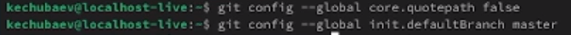
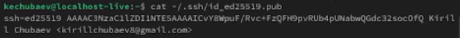
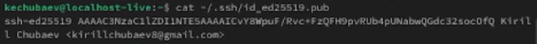
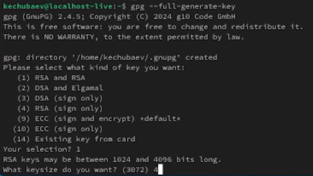
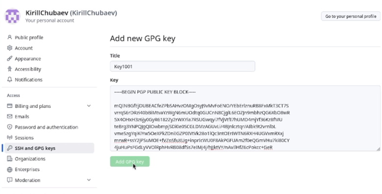
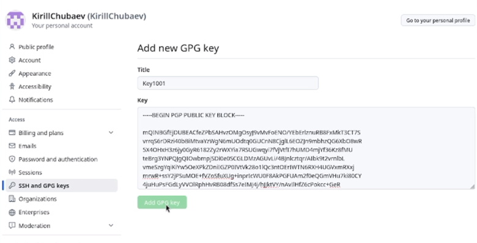
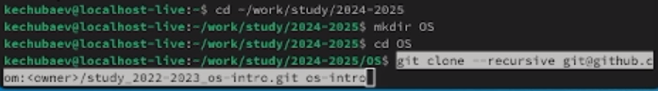

Цель работы
Целью данной работы является: 1. Изучить идеологию и применение
средств контроля версий;
- Освоить умения по работе с git.
Ход выполнения лабораторной
работы
- Я открыл терминал и указал имя и email владельца репозитория:

- Далее настроил utf-8 в выводе сообщений git и задал имя начальной
ветки, а также ввёл параметр «autocrlf:» и параметр «safecrlf:»:
 
- Я сгенерировал пару ключей, которые сохранились в каталоге ~/.ssh/.
Далее загрузил сгенерированный открытый ключ на GitHub:
 

- Далее я сгенерировал PGP-ключ и указал ему соответсвующие
настройки
 
- Затем я вывел отпечаток данного ключа и загрузил на GitHub:

 

- Потом указал Git применять ключ при подписи коммитов:

- Перейдя на станицу репозитория с шаблоном курса, я начал создавать
репозиторий через сайт GitHub. Я выбрал вкладку «Use this template» и в
открывшемся окне я задал имя репозитория «study_2024-2025» и создал сам
репозиторий:

- Затем я клонировал репозиторий с помощью специальной команды:
 
- Далее я удалил ненужные файлы и с помощью команды make создал
дополнительные каталоги:

- И загрузил их на GitHub:


Вывод
В ходе выполнения данной лабораторной работы я изучл идеологию и
применение средств контроля версий, а также освоил умения по работе с
git.